Structures
This tool is to simulate frequency response of uniaxial rectangular waveguide structures composed from several types of elements (step, cavity, diaphragm) connected to each other by straight waveguide sections (See Figures 1-5).
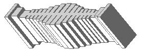
Figure 1: harmonic filters
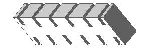
Figure 2: band-pass filters
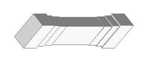
Figure 3: high-pass filters
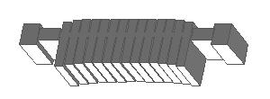
Figure 4: exotic filters
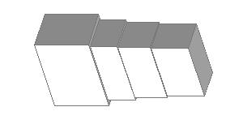
Figure 5: transformers

Figure 1: harmonic filters

Figure 2: band-pass filters

Figure 3: high-pass filters

Figure 4: exotic filters

Figure 5: transformers
Elements
Two type of connections are used here: 1. A rectangular waveguide section, the "node", is a guide of smaller cross-section that is assumed to conduct only the dominant mode. It is used for input/output and interconnections.2. A scattering element, the "connector", is a certain type of connection between the nodes. Those elements are generally used for matching and resonating purposes.
Connections
The structure starts from a node and ends to a node. The first and the last nodes are input and output ports. Each node can be only connected to a connector (see Figure 6).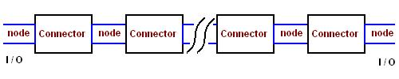
Figure 6: Schematic of connections.
Nodes
Types of Nodes
A node is usually a relatively smaller waveguide section with a single waveguide mode taken into account. The nodes might be used to represent waveguide sections where conversion of modes or coupling between modes is not significant and could be neglected. Generally they are relatively smaller waveguides, longer waveguides, or in sequence of gradually changes of dimensions, etc. Though only one type node, the rectangular waveguide, is presented here, some other types might be added in future. A particular order of data record is reserved for the nodes as shown below| OptInd | NodInd | X1 | X2 | X3 | X4 | X5 |
Where
OptInd is optimization or synthesis index, an integer number reserved for optimizer and synthesizer in future upgrades
NodInd is number of the node (1 for rectangular waveguide)
X0,X1,..,X5 are five characteristic geometric dimensions of the node.
Rectangular Waveguide
The rectangular waveguide (see Figure 7) is only type of nodes is available here for now.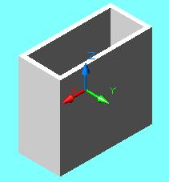
Figure 7: A rectangular waveguide section (node).
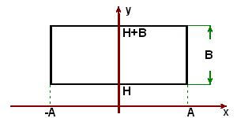
Figure 8: Dimensions of a rectangular waveguide
| OptInd | 1 | L | A | B | H | X5 |
Where
OptInd is optimization or synthesis index, an integer number reserved for optimizer and synthesizer in future upgrades
1 is the number identifying the node is a rectangular waveguide
L is length of the waveguide
A,B,H are the dimensions of the cross-section of the waveguide (see Figure 8)
X5 is a reserved variable that can be put 0 (cannot be omitted).
Connectors
Types of Connectors
There are three types of connections are used here yet, i.e. direct (a flange), cavity and diaphragm (an iris). The connector is generally a scattering element providing particular reflection and transmission effects. The electro-magnetic models used for computation of S-parameters are based on some variational methods taking into account up to 200 waveguide modes on apertures (all junctions) and between apertures (cavities). Each connector is represented in the schematic file by a line of parameters as following| OptInd | JunInd | X1 | X2 | X3 | X4 | X5 | X6 |
Where
OptInd is optimization or synthesis index, an integer number reserved for optimizer and synthesizer in future upgrades
JunInd is the number identifying the connector (1 for direct, 2 for cavity, 5 for diaphragm).
X0,X1,..,X6 six characteristic geometric dimensions of a connector.
As some more connectors can be added in future, some of parameters are reserved. If the number of parameters are more than actually needed for representation of an element, they can be put zeros or any numbers, but they cannot be omitted in appropriate record line.
Direct Connection
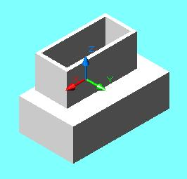
Figure 9: Direct connection of a smaller waveguide to a large one.
| 0 | 1 | 0 | 0 | 0 | 0 | 0 | 0 |
Connection by a Cavity
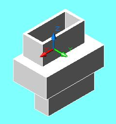
Figure 10: A cavity between two waveguides.
| OptInd | 2 | L | A | B | H | X5 | X6 |
Where
OptInd is optimization or synthesis index, an integer number reserved for optimizer and synthesizer in future upgrades
2 is the number identifying the connector as a cavity
L is length of the cavity.
A,B,H are dimensions of the cross-section of the cavity (see Figure 8).
X5,X6 are reserved variable that are not used in computation and can be put 0 but cannot be omitted.
Connection by a Diaphragm
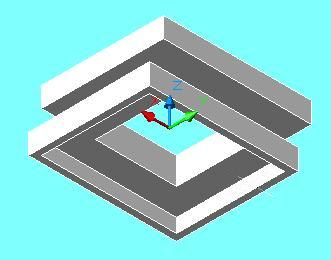
Figure 11: A diaphragm between two waveguides.
| OptInd | 5 | L | A | B | H | X5 | X6 |
Where
OptInd is optimization or synthesis index, an integer number reserved for optimizer and synthesizer in future upgrades
5 is the number identifying the connector as a diaphragm.
L is length (thickness) of the diaphragm.
A,B,H are dimensions of the cross-section of the window (see Figure 8).
X5,X6 are reserved variable that are not used in computation and can be put 0 but cannot be omitted.
Schematic File
The schematic file contains information of all nodes and connectors of a structure in same sequencential order they comprise the structure. Here below is an example of a schematic text for an WR112 harmonic filter

Figure 12: HFSS 3D view of surface of a WR-112 harmonic filter.
|
0 1 0.40000 0.55600 0.49940 -0.24970 0.00000 0 1 0.00000 0.00000 0.00000 0.00000 0.00000 0.00000 3 1 0.33463 0.50073 0.32854 -0.16427 0.00000 0 1 0.00000 0.00000 0.00000 0.00000 0.00000 0.00000 3 1 0.39751 0.43828 0.23434 -0.11717 0.00000 0 1 0.00000 0.00000 0.00000 0.00000 0.00000 0.00000 3 1 0.03000 0.43500 0.08862 -0.04431 0.00000 0 2 0.13000 0.43500 0.32000 -0.16000 0.00000 0.00000 0 1 0.03000 0.43500 0.10000 -0.05000 0.00000 0 2 0.13077 0.43500 0.32440 -0.16220 0.00000 0.00000 0 1 0.03000 0.43500 0.10000 -0.05000 0.00000 0 2 0.13572 0.43500 0.35268 -0.17634 0.00000 0.00000 0 1 0.03000 0.43500 0.10000 -0.05000 0.00000 3 2 0.14697 0.43500 0.38310 -0.19155 0.00000 0.00000 0 1 0.03000 0.43500 0.10000 -0.05000 0.00000 3 2 0.16345 0.43500 0.52300 -0.26150 0.00000 0.00000 0 1 0.03000 0.43500 0.10000 -0.05000 0.00000 3 2 0.18119 0.43500 0.61524 -0.30762 0.00000 0.00000 0 1 0.03000 0.43500 0.10000 -0.05000 0.00000 3 2 0.19487 0.43500 0.73650 -0.36825 0.00000 0.00000 0 1 0.03000 0.43500 0.10000 -0.05000 0.00000 3 2 0.20000 0.43500 0.77112 -0.38556 0.00000 0.00000 0 1 0.03000 0.43500 0.10000 -0.05000 0.00000 3 2 0.19487 0.43500 0.73596 -0.36798 0.00000 0.00000 0 1 0.03000 0.43500 0.10000 -0.05000 0.00000 3 2 0.18119 0.43500 0.61490 -0.30745 0.00000 0.00000 0 1 0.03000 0.43500 0.10000 -0.05000 0.00000 3 2 0.16345 0.43500 0.52250 -0.26125 0.00000 0.00000 0 1 0.03000 0.43500 0.10000 -0.05000 0.00000 3 2 0.14697 0.43500 0.38428 -0.19214 0.00000 0.00000 0 1 0.03000 0.43500 0.10000 -0.05000 0.00000 0 2 0.13572 0.43500 0.35268 -0.17634 0.00000 0.00000 0 1 0.03000 0.43500 0.10000 -0.05000 0.00000 0 2 0.13077 0.43500 0.32440 -0.16220 0.00000 0.00000 0 1 0.03000 0.43500 0.10000 -0.05000 0.00000 0 2 0.13000 0.43500 0.32000 -0.16000 0.00000 0.00000 3 1 0.03000 0.43500 0.08954 -0.04477 0.00000 0 1 0.00000 0.00000 0.00000 0.00000 0.00000 0.00000 3 1 0.40017 0.43821 0.23312 -0.11656 0.00000 0 1 0.00000 0.00000 0.00000 0.00000 0.00000 0.00000 3 1 0.33842 0.50049 0.32944 -0.16472 0.00000 0 1 0.00000 0.00000 0.00000 0.00000 0.00000 0.00000 0 1 0.40000 0.55600 0.49940 -0.24970 0.00000 |